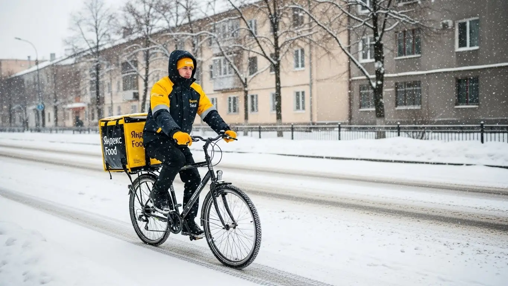
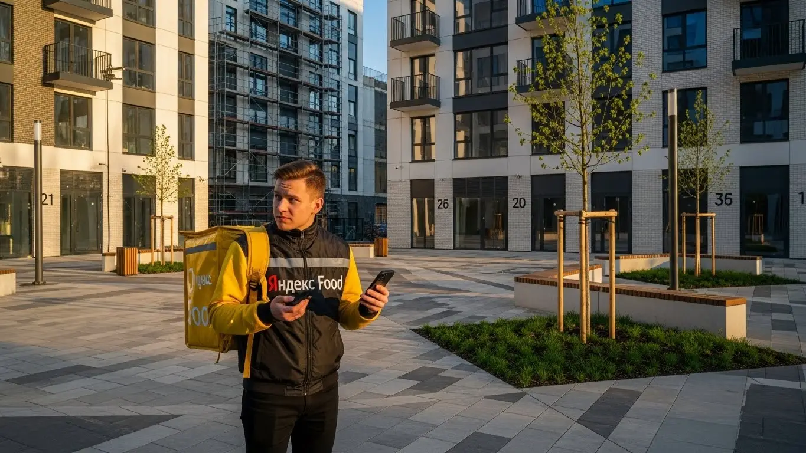

Доход и условия работы курьером Яндекс Еды в Анапе 2025-2026
- Работа курьером Яндекс Еды в Анапе: для кого эта вакансия и что вы получите
- Сколько вы будете зарабатывать курьером в Анапе: калькулятор дохода и разбор выплат
- Реальный заработок курьера в Анапе: смены и месячный доход
- График работы и форматы занятости
- Требования к кандидату и документы
- Самозанятость, налоги и юридическая чистота
- Пошаговое оформление и первый выход на линию в Анапе
- Пешком, на вело или на авто: что выгоднее в Анапе
- Районы, маршруты и «топовые» зоны заказов в Анапе
- Безопасность, страховка, штрафы и оплата простоя
- Плюсы и возможные минусы работы курьером в Анапе
- Реальные истории и отзывы курьеров из Анапы
- Ответы на главные вопросы о работе курьером Яндекс Еды в Анапе
- Короткие ответы на главные вопросы
- Итоги и ваш следующий шаг
Все города
Думаешь крутить педали или руль по Анапе и зарабатывать на доставках? Идея хорошая, но давай сразу начистоту. Тебя наверняка цепляют красивые цифры в рекламе, но в голове крутятся вопросы: а не «убью» ли я свою машину или велик за пару месяцев? Не солью ли весь заработок на ремонт и бензин? И как не застрять в мертвой пробке на Пионерском проспекте ради заказа на 200 рублей? Это не очередная рекламная статья. Это честный разговор о том, что такое работа курьером Яндекс Еды в Анапе на самом деле, со всеми её плюсами, минусами и подводными камнями.
Чтобы через месяц не проклинать всё на свете и не жалеть о потраченном времени, нужно понимать «внутрянку» этой работы именно в нашем курортном городе. Твой реальный доход — это не просто сумма за заказы. Из неё нужно вычесть налог самозанятого, расходы на связь, амортизацию транспорта и, главное, учесть местную специфику. Рейтинг, который решает, дадут ли тебе «жирный» заказ, логистика в забитом туристами центре и спальных районах вроде Алексеевки — всё это напрямую влияет на твой карман. Большинство новичков в Анапе наступают на одни и те же грабли: гоняются за копеечными заказами в час пик или сидят без дела в «мертвых» зонах, теряя деньги. Чтобы сразу увидеть ключевые условия, требования и заполнить анкету, можно изучить страницу про работу курьером Яндекс Еда в Анапе, где всё собрано в одном месте.
В этом гиде мы всё разложим по фактам. Разберём, на чем выгоднее работать в Анапе: на своих двоих, на велике или на авто, учитывая рельеф и летний трафик. Посчитаем, сколько РЕАЛЬНО можно положить в карман за смену в пик сезона и в «тихий» зимний месяц. Я покажу на карте самые «хлебные» районы и расскажу, в какое время там пик заказов. Выясним, как анапская погода — от палящего зноя до ледяного норд-оста — влияет на работу и доход. И, конечно, поговорим о штрафах: за что на самом деле наказывают и как этого легко избежать.
Меня зовут Алексей. Я сам не один год откатал курьером по этим улицам, а сейчас у меня свой небольшой таксопарк-партнёр, так что я знаю эту кухню с обеих сторон — и как простой работяга, и как тот, кто подключает ребят к системе. Я не буду тебе обещать золотые горы, но дам честную информацию, которая поможет тебе принять решение и стартовать правильно. Хватит болтовни, давай к делу. Сейчас всё разложу по полочкам, без воды и розовых очков.
Прежде чем нырять в детали, давай по-быстрому пробежимся по главным темам. Так ты сразу поймёшь, где искать ответы на свои вопросы.
Что ты точно узнаешь из этого разбора
В этой статье ты ТОЧНО узнаешь:
- Сколько РЕАЛЬНО можно заработать в Анапе за смену, учитывая сезонность, погоду и расходы на транспорт?
- В каких районах Анапы больше всего заказов летом, а где выгоднее работать в межсезонье, чтобы не стоять в пробках?
- Что выгоднее выбрать для Анапы — велосипед, машину или пешие прогулки, и как это повлияет на доход?
- За что на самом деле снижают рейтинг или применяют штрафы, и как этого избежать новичку?
- Насколько сложно оформить самозанятость, сколько платить налогов и почему это безопаснее, чем работать «всерую»?
- Как правильно выбирать слоты и «фиолетовые зоны» в приложении, чтобы зарабатывать больше, а не кататься впустую?
А если тебе некогда читать всю статью — переходи сразу к заключению, где ты найдёшь короткие ответы на все эти вопросы и указания, в каких разделах искать подробности.
А чтобы наглядно увидеть основные цифры и факты о работе в Анапе, вот удобная инфографика.
Работа курьером в Анапе: ключевые цифры
Работа курьером Яндекс Еды в Анапе: для кого эта вакансия и что вы получите
Кому подойдёт эта работа в Анапе
Эта вакансия курьера в Анапе — отличный вариант для самых разных людей. Если ты студент и ищешь подработку, чтобы заработать на свои расходы, не отвлекаясь от учёбы, — это для тебя. Если у тебя нет опыта, но есть желание трудиться и получать деньги сразу, — тоже твой вариант. Чтобы стать курьером, не нужны специальные навыки. Многие мои ребята используют доставку как подработку после основной смены или в выходные, чтобы закрыть кредит или накопить на что-то.
Для водителей на своём авто это возможность превратить машину в источник дохода, но без сложностей с пассажирами, как в такси. И главное — это работа для тех, кто ценит свободу. Ты сам решаешь, когда выходить на линию, сколько часов работать и когда устроить себе выходной. Если тебе важен свободный график и быстрые, ежедневные выплаты, то ты по адресу.
Главные преимущества для жителей районов 12-го микрорайона, Алексеевки, Высокого берега
Одно из главных удобств — возможность работать прямо в своём районе. Не нужно тратить время и деньги, чтобы добираться через всю Анапу к началу смены. Живёшь, например, в 12-м микрорайоне — просто включаешь приложение «Яндекс Про» и начинаешь получать заказы из ближайших кафе и магазинов.
То же самое касается и жителей Алексеевки или новостроек на Высоком берегу. В этих районах постоянно открываются новые заведения, а плотность населения растёт, так что спрос на доставку есть всегда. Ты можешь выполнять заказы, отлично зная все дворы и короткие пути, что даёт тебе преимущество в скорости. По сути, ты работаешь на своей «домашней» территории, что гораздо комфортнее.
Краткое обещание по доходу и условиям
Что по деньгам? В Анапе активный курьер Яндекс Еды за смену в 8–10 часов может заработать от 3000 до 4500 рублей, особенно в сезон или в плохую погоду. Если рассматривать это как подработку на несколько часов в день, выходит 1500–2000 рублей. В месяц при полной занятости зарплата курьера может доходить до 80 000 – 95 000 рублей и выше, если ты на машине и берёшь выгодные слоты.
Ключевые условия работы просты: свободный график, который ты сам себе составляешь в приложении, и ежедневные выплаты на карту. Заработал сегодня — получил сегодня. Опыт не требуется, всему необходимому научат на коротком онлайн-инструктаже. Ты получаешь фирменный термокороб и можешь начинать работать.
Сколько вы будете зарабатывать курьером в Анапе: калькулятор дохода и разбор выплат
Из чего складывается доход курьера
Твой заработок в Яндекс Еде — это не просто фиксированная ставка, а сумма нескольких частей. Во-первых, базовая оплата за каждый выполненный заказ. Во-вторых, доплата за расстояние — чем дальше везти, тем больше денег. В-третьих, в часы пик, плохую погоду или в туристический сезон в Анапе действуют повышающие коэффициенты, которые могут увеличить стоимость заказа в полтора-два раза.
Кроме того, есть система бонусов за выполнение определённого числа заказов за день или неделю. Все чаевые от клиентов через приложение полностью твои — сервис не берёт с них комиссию. Важный момент: если ты приехал в ресторан, а заказ ещё не готов, включается оплата простоя. А для пеших курьеров на длинных маршрутах может быть компенсация проезда. Вся твоя зарплата и детализация по заказам видны в приложении Яндекс Про.
Как пользоваться калькулятором дохода
На странице вакансии есть специальный калькулятор — удобный инструмент, чтобы прикинуть свой потенциальный заработок. Пользоваться им просто: сначала выбираешь свой город, в нашем случае — Анапа. Затем указываешь тип доставки: пеший курьер, на велосипеде или на своём автомобиле. После этого выставляешь, сколько часов в день и сколько дней в неделю планируешь работать. На основе этих данных система покажет примерный диапазон твоего дневного и месячного дохода. Конечно, это прогноз, но он основан на реальной статистике по Анапе и помогает понять, на какие цифры можно ориентироваться.
Прикинь свой доход в Анапе
Примерный доход в месяц:
*Расчёт основан на средней ставке для Анапы (~450 ₽/час) и не учитывает бонусы, чаевые и повышенные коэффициенты. Ваш реальный доход может отличаться.
Чтобы увидеть актуальные условия и требования, а также заполнить анкету, загляни на страницу про работу курьером Яндекс Еда в твоём городе — там всё собрано в одном месте.
Примеры расчёта для пешего, вело- и авто‑курьера в Анапе
Давай на конкретных примерах. Пеший курьер, работающий в центре Анапы — в районе набережной и парков, где много кафе и туристов, — за 4-часовую вечернюю смену может заработать 1800–2200 рублей. Заказы здесь короткие, но их много.
Велокурьер, курсирующий между спальными районами, например, из 3А микрорайона в 12-й, за 8-часовой рабочий день заработает около 3000–3800 рублей. Он мобильнее, покрывает большие расстояния и выполняет больше заказов.
Водитель-курьер на автомобиле имеет самый высокий потенциал дохода. Он может брать заказы по всему городу и в пригороды, например, в Витязево или Сукко. В дождливый день или в пик сезона его заработок за полную смену может составить 4500–6000 рублей и больше за счёт дальних доставок, крупных заказов из магазинов и повышенных коэффициентов.
Реальный заработок курьера в Анапе: смены и месячный доход
Диапазон дохода для подработки и полной занятости
А теперь к самым важным цифрам, без прикрас. Сколько реально можно заработать курьером в Анапе, если не сидеть на месте. Если тебе нужна подработка на 2–4 часа в день после основной работы или учёбы, цифры будут такие. Пеший курьер в центре за такой короткий слот может сделать 800–1500 рублей. Велокурьер за счёт скорости заработает больше — 1000–1800 рублей за то же время, особенно если кататься по спальным районам вроде 3А и 3Б микрорайонов. Курьер на автомобиле на короткой смене может рассчитывать на 1500–2500 рублей, но из этой суммы нужно вычесть расходы на бензин.
При полной занятости, то есть на смене 8–10 часов, доход уже серьёзнее. Пеший курьер, который стабильно берёт смены в пиковые часы, в день может приносить 2500–3500 рублей. Велосипедист за счёт мобильности выходит на 4000–5000 рублей, особенно в разгар сезона. Самый высокий доход, конечно, у курьеров на своем авто. За полный рабочий день, с учётом дальних заказов в Витязево или Сукко, дневной доход может доходить до 5000–7000 рублей «грязными». В итоге месячная зарплата при полной занятости в Анапе колеблется от 50 000–60 000 рублей у пешего курьера до 100 000–120 000 у автокурьера, особенно в высокий сезон с мая по сентябрь.

Как район, время суток и погода влияют на доход
Твой доход — это не фиксированная ставка, он сильно зависит от того, где, когда и в какую погоду ты работаешь. Главное правило: где люди — там заказы. В Анапе самый высокий спрос — в центре города, на улице Крымской, на набережной, особенно по вечерам и в выходные. Именно там сосредоточено большинство ресторанов. Летом вся прибрежная полоса от центрального пляжа до Джемете и Витязево превращается в приложении Яндекс Про в «фиолетовую зону» — зону высокого спроса с повышенными коэффициентами.
Время и погода — твои главные союзники в увеличении дохода. Пиковые часы — это обед с 12:00 до 14:00 и ужин с 18:00 до 22:00. В пятницу и выходные спрос держится почти весь день. Плохая погода — это вообще золотая жила. В дождь или сильную жару люди предпочитают заказать доставку, а не выходить из дома. В такие моменты Яндекс включает динамические коэффициенты, которые могут умножить стоимость заказа в 1,5, а то и в 2 раза. К тому же благодарные клиенты чаще оставляют хорошие чаевые, когда ты привозишь им заказы из Яндекс Еды в ливень.
Советы по увеличению заработка от опытных курьеров
Во-первых, научись читать карту в приложении «Яндекс Про». Не гоняйся за одним заказом на другой конец города. Выгоднее работать внутри «фиолетовой» или «красной» зоны с высоким спросом, даже если отдельные заказы кажутся мелкими. Система будет подкидывать тебе «цепочки» заказов, когда ты забираешь новый заказ рядом с точкой доставки предыдущего. Это экономит время и повышает твой доход в час.
Во-вторых, грамотно выбирай слоты. Вечерние смены с четверга по воскресенье — самые денежные. Если есть возможность, бери именно их. Не бойся плохой погоды: подготовь дождевик, непромокаемую обувь — и твой доход за этот день будет заметно выше. Для курьеров на автомобиле хорошая стратегия — днём работать в центре, а к вечеру смещаться в сторону пригородов вроде Витязево или Сукко, где много гостевых домов и отелей с туристами, заказывающими ужин.
Наконец, сочетай форматы доставки, если есть возможность. Например, если у тебя есть и машина, и велосипед, используй велик для центра города в летних пробках, а машину — для дальних заказов или в плохую погоду. Такая гибкость позволит подстроиться под любые условия и всегда быть с заказами. И не забывай про сервис: вежливое «Приятного аппетита!» легко может принести тебе лишние 100–200 рублей чаевых с заказа.
Мой знакомый, парень лет 30 на «Гранте», решил поработать курьером в пятницу вечером в июле. Начал в 18:00 в центре Анапы, но, увидев пробки, сразу взял несколько заказов в сторону Джемете. Около трёх часов развозил заказы из ресторанов туристам по отелям. Спрос был бешеный, коэффициент — х1.7. Потом прилетел дальний заказ в Витязево. К 23:00 он выполнил 14 заказов. «Грязными» за эти 5 часов вышло 4200 рублей, плюс ещё 800 рублей насыпали чаевыми. За вычетом бензина (рублей 400) чистыми получилось 4600 рублей. Он сработал с умом: ушёл от пробок в центре и поехал за потоком туристов.
Итак, заработок курьера в Анапе напрямую зависит от сезона, погоды и умения выбрать правильное время и место. Ключ к высокому доходу — работа в пиковые часы в зонах повышенного спроса и готовность к любым погодным условиям. Перед выходом на смену всегда проверяй карту в «Яндекс Про» и строй маршрут так, чтобы дольше оставаться в «горячих» зонах, особенно в разгар курортного сезона.
График работы и форматы занятости
Подработка после учёбы или основной работы
Главный плюс работы курьером — это по-настоящему свободный график. Ты сам себе начальник. Для студентов или тех, кому нужна подработка, это идеальный вариант. Например, студент анапского филиала СГУ спокойно может брать 4-часовой слот с 18:00 до 22:00 в будни. Работая велокурьером в центре и ближайших спальниках, он за вечер заработает свои 1200–1500 рублей, что станет хорошей прибавкой к стипендии.
Другой частый сценарий — для человека с основной работой с 9 до 18. Ты можешь выходить на линию в пятницу вечером и работать весь день в субботу. Это две полноценные смены в самое пиковое время. Автокурьер за эти два дня легко может сделать 8 000–10 000 рублей, что станет весомым дополнением к основной зарплате. Система позволяет как планировать слоты на неделю вперёд, так и выходить на линию спонтанно, если видишь в приложении Яндекс Про зону высокого спроса.
Полная занятость: как выглядит типичный день курьера
Если ты решил сделать эту работу основной, твой день будет строиться иначе. Типичный день курьера на полной занятости в Анапе начинается в 10:00–11:00 утра. Первые часы обычно спокойные, идут заказы из Яндекс Доставки, магазинов или доставка документов. Первый пик — обеденный, с 12:00 до 14:00. В это время лучше находиться в центре города или рядом с деловыми кварталами. После пика наступает затишье примерно до 17:00 — это хорошее время, чтобы самому пообедать и передохнуть.
Основная работа начинается вечером, с 18:00. В это время появляются самые высокие коэффициенты и больше всего заказов. Опытный курьер смещается в густонаселённые спальные районы, такие как 3А, 3Б микрорайоны, Алексеевка, или, если он на машине, в сторону туристических пригородов. Заканчивается смена обычно в районе 22:00–23:00. В течение дня заказы чередуются с небольшими перерывами в ожидании приготовления еды или поступления следующего заказа. Такой ритм позволяет отработать полный день и не выгореть.
Как планировать слоты и выходы через приложение «Яндекс Про»
Приложение «Яндекс Про» — твой главный рабочий инструмент. Именно в нём ты управляешь всем своим расписанием. Ты можешь выбирать плановые слоты или работать в свободном режиме. Плановые слоты гарантируют минимальные почасовые выплаты, даже если заказов будет мало, но требуют быть на линии в определённое время и в определённом районе. Важно не опаздывать на такие слоты, так как это влияет на твой рейтинг активности.
Чтобы спланировать неделю, заходи в раздел «Расписание». Там ты увидишь доступные слоты в разных районах Анапы. Самые выгодные (вечерние, выходные) лучше бронировать заранее. Также в приложении есть карта спроса, где зоны подсвечены разными цветами от зелёного до фиолетового. Если решил выйти без планового слота — просто приезжай в «фиолетовую» зону, нажимай кнопку «На линии» и почти сразу начнёшь получать заказы. Высокий рейтинг даёт приоритет в распределении заказов, так что пунктуальность и ответственность напрямую влияют на твой стабильный доход.
Есть у меня девочка-студентка, работает пешим курьером. Живёт в 12-м микрорайоне. Пары у неё заканчиваются в 15:00. Она открывает «Яндекс Про», бронирует себе 4-часовой слот с 17:00 до 21:00 в центральном районе, который горит как зона высокого спроса. Доезжает на маршрутке до точки старта, приходит за 10 минут, выходит на линию. За 4 часа разносит заказы Яндекс Еды из кафе на Гребенской и Крымской по ближайшим квартирам и отелям. Выполняет 8 заказов, зарабатывает 1650 рублей. Такой график позволяет ей днём учиться, вечером работать, а на выходных отдыхать.
Гибкий график — ключевое преимущество, позволяющее использовать эту работу и как основной источник дохода, и как подработку. Главное — научиться грамотно планировать время через «Яндекс Про». Практический совет новичкам без опыта: начинайте с плановых слотов в «фиолетовых» зонах. Это поможет понять реальные условия работы и гарантирует доход, пока вы набиваете руку и зарабатываете рейтинг.

Требования к кандидату и документы
Давай разберёмся, что на самом деле нужно, чтобы стать курьером. Здесь не смотрят на резюме или диплом, главное — ответственность и желание работать.
Возраст, гражданство и базовые условия
Начнём с основ. Чтобы стать курьером Яндекс Еды, тебе должно быть полных 18 лет. Это строгое правило, связанное с материальной ответственностью и законодательством, поэтому исключений не бывает. Если тебе 17, придётся немного подождать.
По гражданству условия тоже чёткие: принимают граждан Российской Федерации и стран ЕАЭС (Беларусь, Казахстан, Армения, Кыргызстан). Если ты гражданин одной из этих стран и все документы в порядке, проблем с оформлением не будет.
Что касается физической формы, от тебя не требуют олимпийских рекордов. Если ты пеший курьер, будь готов много ходить. В Анапе летом это может быть непросто из-за жары, так что трезво оценивай свои силы. Велокурьеру важно уверенно держаться на велосипеде и не бояться проехать 15–20 километров за смену. Водителю-курьеру, само собой, нужно иметь права и стаж вождения, но главное — быть внимательным на дороге.
Какие документы нужны для работы курьером
Список документов для трудоустройства стандартный, и собрать его можно за один день. Вот что нужно подготовить заранее, чтобы процесс пошёл быстрее:
- Паспорт. Основной документ, удостоверяющий личность. Для граждан ЕАЭС — национальный паспорт и документы, подтверждающие легальное пребывание в РФ (миграционная карта, регистрация).
- ИНН (Идентификационный номер налогоплательщика). Он необходим для оформления самозанятости. Если ты не помнишь свой номер, его можно за пару минут бесплатно узнать на сайте ФНС по паспортным данным.
- Банковская карта. Нужна личная дебетовая карта любого российского банка, оформленная на твоё имя. Именно на неё будут приходить выплаты. Карта друга или родственника не подойдёт.
- Медицинская книжка. Так как ты будешь доставлять еду из ресторанов, медкнижка обязательна. Это гарантия безопасности для клиентов и для тебя. Если её нет, можно сделать в любом подходящем медцентре Анапы. Советую не затягивать, так как на её оформление уходит несколько дней.
Можно ли работать с 16 лет и какие есть альтернативы
Часто спрашивают, со скольки лет берут в Яндекс Еду. Отвечаю честно: нет, работать с 16 или 17 лет нельзя. Минимальный возраст для начала работы — 18 лет. Это связано с полной материальной ответственностью за заказы и денежные средства, а также с ограничениями по трудовому кодексу для несовершеннолетних.
Если тебе ещё нет 18, но очень хочется подзаработать летом в Анапе, не отчаивайся. Есть и другие варианты подработки. Например, можно устроиться промоутером и раздавать листовки на набережной, поработать помощником в пляжном кафе или в парке аттракционов. Да, это другая работа, но она тоже даст опыт и первые карманные деньги, пока ждёшь совершеннолетия.
Кейс из практики: Ко мне как-то пришёл устраиваться парень, 19 лет, только переехал в Анапу. Из документов у него был только паспорт и карта. Он даже не знал, что такое ИНН, и был уверен, что медкнижку делают месяц. Я ему показал, как за минуту найти свой ИНН на сайте налоговой. Потом подсказал адрес клиники, где медкнижку можно оформить за 3-4 дня. В итоге через неделю он уже вышел на свою первую смену и за 4 часа заработал около 1500 рублей.
Краткий вывод: Требования к кандидатам вполне реальные: возраст от 18 лет, гражданство РФ или ЕАЭС и стандартный пакет документов. Ничего сверхъестественного не нужно. Главный совет — заранее проверь все документы и начни делать медкнижку, если её нет. Это сэкономит тебе несколько дней на старте.
Самозанятость, налоги и юридическая чистота
Давай сразу проясним момент с налогами и самозанятостью. Кажется, что это сложно, дорого и связано с бумажной волокитой. На самом деле, это современный и очень простой способ работать официально, получая «белый» доход.
Почему курьеры Яндекс Еды работают как самозанятые
Работа курьером — это не классическая офисная занятость с 9 до 18. У тебя свободный график, ты сам решаешь, когда и сколько работать. Формат самозанятости (официально — «Налог на профессиональный доход» или НПД) идеально для этого подходит. Это не трудовой договор, а партнёрские отношения с сервисом.
Главные плюсы такого оформления:
- Официальный доход. Все твои заработки проходят легально. Это значит, что ты можешь, например, взять кредит в банке или получить визу, предоставив справку о доходах.
- Простота. Никаких бухгалтеров, деклараций и походов в налоговую. Все расчёты и отчётность происходят автоматически в специальном приложении.
- Юридическая чистота. Ты работаешь честно, платишь налоги и спишь спокойно. Никаких «серых» схем и конвертов.
По сути, самозанятость — это самый простой способ легализовать свою подработку, не влезая в сложности с открытием ИП. Для курьера это идеальный вариант.
Как за 10 минут оформить самозанятость через «Мой налог»
Зарегистрироваться самозанятым проще, чем создать аккаунт в соцсети. Весь процесс занимает 10-15 минут и делается прямо с телефона. Вот пошаговая инструкция:
- Скачай приложение. Найди в Google Play или App Store официальное приложение ФНС России — «Мой налог».
- Выбери способ регистрации. Самый простой и быстрый — по паспорту РФ. Также можно зарегистрироваться через личный кабинет налогоплательщика или портал Госуслуг.
- Отсканируй паспорт и сделай фото. Приложение попросит навести камеру на главный разворот паспорта, чтобы считать данные. После этого нужно будет сделать селфи — система сравнит его с фото в паспорте для подтверждения личности.
- Подтверди регистрацию. Проверь свои данные, выбери регион деятельности (например, Краснодарский край) и подтверди регистрацию. Всё, с этого момента ты официально являешься самозанятым.
Никаких госпошлин, никаких визитов в налоговую. Всё делается онлайн и абсолютно бесплатно.
Сколько и как платить налоги
Теперь о самом главном — о деньгах. Ставка налога для самозанятого одна из самых низких в стране. С дохода, который ты получаешь от юридических лиц (в нашем случае — от Яндекса), ты платишь 6%.
Процесс уплаты налога максимально автоматизирован и прозрачен. Тебе не нужно ничего считать самому.
- Яндекс передаёт информацию о твоих выплатах в налоговую службу.
- Приложение «Мой налог» автоматически рассчитывает сумму налога за прошедший месяц.
- До 12-го числа следующего месяца тебе приходит уведомление с суммой к уплате.
- Оплатить налог нужно до 28-го числа. Это можно сделать прямо в приложении, привязав банковскую карту.
Работать неофициально за «серый» кэш — это всегда риск. Сегодня платят, а завтра могут «кинуть», и ты ничего не докажешь. Самозанятость даёт тебе защиту и уверенность: твой доход официален, а отношения с государством — прозрачны.
Кейс из практики: Один из моих водителей, парень лет 30, долгое время работал в такси «от борта», получал только наличку и боялся любых официальных оформлений. Когда он решил попробовать себя в доставке, его чуть ли не силой заставили оформить самозанятость. Через месяц он пришёл и сказал: «Алексей, я зря боялся. Я за две минуты привязал карту в приложении, налог списался сам, и я даже не заметил. Зато теперь я спокойно взял в рассрочку новый телефон, потому что смог показать банку официальный доход».
Краткий вывод: Самозанятость — это не проблема, а удобный инструмент для легальной работы со свободным графиком. Регистрация занимает 10 минут, налог низкий и платится автоматически. Мой совет: не ищи обходных путей. Оформляй всё официально, это даст тебе спокойствие и финансовую стабильность.
Пошаговое оформление и первый выход на линию в Анапе
Многих новичков пугает процесс оформления: кажется, что это долго, сложно и потребует кучи бумаг. На деле всё устроено так, чтобы ты мог стать курьером и начать зарабатывать максимально быстро, часто — в тот же день. Вся система регистрации и обучения проходит онлайн, без поездок в офис и нудных собеседований. Главное — твоё желание и наличие смартфона.
Шаг 1–2: анкета и онлайн‑обучение
Первый шаг — это заполнение простой анкеты на сайте. Никаких резюме и рассказов о себе на три страницы не нужно. Потребуются базовые данные: ФИО, номер телефона, город (выбираешь Анапу), гражданство. После этого система попросит загрузить фото необходимых документов для проверки — это стандартное требование, которое выполняется быстро.
Как только твои данные подтвердят, откроется доступ к короткому онлайн-обучению. Это не лекции в университете, а несколько понятных видеороликов и инструкций прямо в приложении. Тебе расскажут, как пользоваться приложением «Яндекс Про», как принимать и выполнять заказы, как общаться с клиентами и службой поддержки. В конце будет небольшой тест из нескольких вопросов, чтобы убедиться, что ты всё понял. Сделано это не чтобы тебя завалить, а чтобы ты увереннее чувствовал себя на первых заказах.
Шаг 3: получение сумки и доступа к заказам в Анапе
После успешного прохождения обучения остаётся последний шаг перед выходом на линию — получить термосумку (или термокороб для автокурьеров). Без неё работать нельзя, так как это гарантия того, что еда доедет до клиента в нужном виде — горячая останется горячей, а холодная — холодной. В Анапе сумку можно получить в партнёрских центрах.
Точные адреса и время работы этих центров появятся у тебя в приложении «Яндекс Про» после завершения обучения. Не нужно ничего искать самому — система подскажет ближайшую к тебе точку. В некоторых случаях можно даже заказать доставку экипировки на дом. Как только сумка окажется у тебя, а профиль будет полностью активирован, ты получишь полный доступ к заказам в городе.
Шаг 4: первый слот и первый доход
Теперь ты готов к работе. Заходишь в «Яндекс Про», открываешь расписание и выбираешь свой первый слот. Слот — это запланированный отрезок времени, когда ты будешь на линии и готов принимать заказы. Для начала советую выбрать пару часов в знакомом тебе районе Анапы, например, там, где ты живёшь. Так будет спокойнее: ты знаешь все дворы, подъезды и короткие пути.
Выходишь на улицу, нажимаешь в приложении кнопку «Начать слот» — и всё, ты на линии. Первый заказ может прийти уже через несколько минут. Выполняешь его, следуя подсказкам в приложении, и получаешь первые деньги на свой баланс. Эти деньги можно будет вывести на карту в тот же день или на следующий — это и есть те самые ежедневные выплаты. Так что от момента заполнения анкеты до первого реального заработка может пройти всего несколько часов.
Например, один студент местного филиала заполнил анкету утром, пока пил кофе. К обеду уже прошёл обучение и тест. После пар заехал в партнёрский офис на улице Крымской, забрал сумку. Вечером вышел на пару часов в своём 12-м микрорайоне, развёз три заказа из пиццерии и суши-бара. К ночи на его балансе было около 700 рублей — его первый доход за вечер подработки, который он сразу вывел на карту. Вот так, без лишней бюрократии, человек за один день начал зарабатывать.
В итоге, всё оформление от заявки до первого заказа в Анапе максимально упрощено и занимает от нескольких часов до одного дня. Не нужно бояться сложностей — система сама ведёт тебя по шагам. Главный совет: держи под рукой паспорт и ИНН, чтобы быстро пройти проверку, и не затягивай с получением сумки.

Пешком, на вело или на авто: что выгоднее в Анапе
Выбор транспорта — ключевой момент, от которого напрямую зависит твоя зарплата и комфорт работы. В Анапе, с её курортной спецификой, пробками летом и сильными ветрами в межсезонье, у каждого формата есть свои сильные и слабые стороны. Нет универсального ответа, что лучше — всё зависит от того, где ты планируешь работать, в какое время и сколько сил готов вкладывать.
Пеший курьер: для центра и плотной застройки в Анапе
Работа пешком — идеальный вариант, если ты живёшь в центре или рядом с ним. Вся курортная зона Анапы, особенно улицы Горького, Крымская, Гребенская и набережная, — это сплошная концентрация кафе, ресторанов и небольших магазинов. Заказы здесь короткие, часто в пределах одного-двух кварталов. Летом, когда центр забит туристами и машинами, пеший курьер доставит заказ быстрее любого автомобиля, который будет стоять в пробке.
Тебе не нужно тратиться на бензин, обслуживание транспорта и искать парковку, что в центре Анапы — большая проблема. Да, много на дальние расстояния не унесёшь, но за счёт высокой плотности заказов можно делать по 3-4 доставки в час и хорошо зарабатывать. Этот формат отлично подходит для подработки студентам или тем, кто хочет совмещать работу с прогулкой.
Велокурьер: быстрые доставки между спальными районами
Велосипед или электросамокат — это золотая середина. Ты уже не привязан к одному кварталу, как пеший курьер, но всё ещё не зависишь от пробок, как водитель. Этот формат идеален для работы в спальных районах Анапы, таких как Микрорайон 3А, Микрорайон 12 или район Высокого берега. Расстояния здесь больше, чем в центре, но вполне преодолимы на двух колёсах.
Для курьера на велосипеде это не только экономия на транспорте, но и, как говорят мои ребята, «оплачиваемый фитнес». Ты можешь быстро доставлять заказы из крупных торговых точек, например, от ТРЦ «Красная Площадь» в соседние жилые комплексы. Главное — трезво оценивать свои силы и учитывать рельеф: Анапа не совсем плоская, есть подъёмы. Но для активного человека это отличный способ поддерживать форму и зарабатывать.
Водитель‑курьер: заказы по всему городу и пригороду Витязево, Супсех, Джемете
Автомобиль открывает доступ к самым денежным заказам. Это доставки на большие расстояния, в пригороды (Витязево, Супсех, Джемете), а также крупные закупки из гипермаркетов. Водитель-курьер не зависит от погоды: в дождь или сильный ветер, когда пешие и велокурьеры сходят с линии, спрос на доставку взлетает, а вместе с ним и коэффициенты. В такие дни можно за смену заработать как за два-три обычных дня.
Конечно, есть и расходы: бензин, амортизация, страховка. Но доход от дальних и объёмных заказов их с лихвой перекрывает. Особенно выгодно работать на авто в межсезонье и зимой, когда туристический трафик спадает, но местные жители активно пользуются доставкой. Если у тебя есть машина и ты хочешь сделать доставку основным источником дохода, а не просто подработкой, — работа курьером на автомобиле станет твоим выбором.
Например, один из наших водителей-курьеров, Сергей, работает в такси, а в свободное время выходит на линию как автокурьер. Его стратегия проста: он берёт слоты в плохую погоду или в вечерние часы пик. Часто начинает в центре, выполняет пару коротких заказов, а потом ждёт «жирный» заказ в пригород, например, в Витязево. Недавно в дождливый вечер субботы он за 6 часов сделал почти 5000 рублей, потому что спрос был огромный, а конкуренции почти не было.
Сравнение форматов доставки в Анапе
| Параметр | Пеший курьер | Велокурьер | Водитель-курьер |
|---|---|---|---|
| Зоны работы | Центр, набережная, плотная застройка | Спальные районы (3А, 12 мкр), районы вокруг ТРЦ | Весь город и пригороды (Витязево, Супсех) |
| Плюсы | Нет расходов, не зависит от пробок, фитнес и польза для здоровья | Скорость, маневренность, экономия, "оплачиваемый фитнес" | Высокий доход, дальние заказы, комфорт, работа в любую погоду |
| Минусы / Расходы | Физическая нагрузка, зависимость от погоды, малый радиус | Нужен велосипед, усталость, зависимость от погоды | Расходы на бензин и обслуживание авто, пробки, парковка |
| Кому подходит | Студентам, для подработки, жителям центра | Активным людям, для подработки и полной занятости | Для максимального заработка, как основная работа |
В итоге, выбор транспорта в Анапе — это выбор стратегии. Для старта и подработки в центре хватит своих ног. Если хочешь большего охвата и скорости — садись на велосипед. А если нацелен на максимальный и стабильный доход круглый год — без машины не обойтись. Мой совет: начни с того, что у тебя уже есть. Возможно, заработав первые деньги пешком, ты решишь вложиться в велосипед или поймёшь, что пора выводить на линию свой автомобиль для максимального заработка.
Районы, маршруты и «топовые» зоны заказов в Анапе
Чтобы в Анапе стабильно зарабатывать курьером и со временем увеличить доход, мало просто крутить педали или руль. Нужно понимать, где и когда «клюёт». Город у нас курортный, и его ритм сильно меняется в зависимости от сезона. Летом деньги крутятся у моря и в туристических центрах, а в межсезонье спрос смещается в жилые кварталы.
Главное правило — не сидеть на месте и следить за картой спроса в приложении «Яндекс Про». Фиолетовые и красные зоны — это наши «месторождения» заказов, где действуют повышающие коэффициенты. Но гоняться за каждым «пожаром» через весь город тоже не стоит. Иногда выгоднее отработать несколько заказов подряд в стабильно «тёплой» зоне, чем сжечь бензин и время в погоне за одним сверхдорогим.
Из практики: был у меня парень-студент, для которого работа курьером на велосипеде была основной подработкой. В первый месяц он пытался кататься по всему городу, в итоге уставал и зарабатывал средне. Потом я ему посоветовал выбрать два-три соседних района и изучить их досконально: все короткие пути, все кафешки. Он сосредоточился на центре и районе Высокого берега. В итоге за 4-часовой вечерний слот стал стабильно привозить по 2000–2500 рублей, потому что перестал тратить время на навигацию и пустые пробеги.

Где больше всего заказов: ТРЦ, бизнес‑центры и туристические места
В Анапе есть несколько точек притяжения, где заказы есть почти всегда. В первую очередь, это торгово-развлекательный центр «Красная Площадь». Здесь сосредоточен огромный фуд-корт, откуда заказы Яндекс Еды летят и в обед, и вечером. Рядом много жилых комплексов, поэтому для курьеров на автомобиле и велосипеде это одна из самых стабильных зон.
Летом, конечно, всё внимание на туристический центр. Центральная набережная, улица Горького, район Театральной площади — это сплошной поток заказов из ресторанов и кафе. Спрос здесь взлетает к вечеру, когда отдыхающие возвращаются с пляжей и заказывают ужин в отели и апартаменты. Коэффициенты в этих зонах в пиковые часы могут быть очень высокими, но и конкуренция тоже. Пешему курьеру и курьеру на велосипеде здесь работать удобнее всего из-за пробок и проблем с парковкой.
Работа в своём районе: примеры для популярных жилых кварталов
Многие думают, что все деньги только в центре, но это не так. Можно отлично зарабатывать, не уезжая далеко от дома. Возьмём, к примеру, микрорайоны 3А и 3Б. Это густонаселённые кварталы, где полно и многоэтажек, и частного сектора. Здесь куча небольших кафе, пиццерий, суши-баров и магазинов вроде «Пятёрочки» и «Магнита», которые подключены к сервису Яндекс Доставка.
То же самое касается Алексеевского микрорайона или района улицы Крымской. Здесь всегда есть стабильный спрос на доставку продуктов и готовой еды, особенно в обеденное время и по вечерам в будни. Работая в своём районе, ты экономишь время и топливо, отлично знаешь все дворы и подъезды, а значит, выполняешь заказы быстрее. Для тех, кто ищет подработку на несколько часов в день, это идеальный вариант.
Как выбирать зоны и слоты в «Яндекс Про», чтобы не мотаться впустую
Приложение «Яндекс Про» — твой главный инструмент планирования. В нём есть карта спроса, которая в реальном времени подсвечивается разными цветами. Чем темнее и насыщеннее фиолетовый цвет, тем выше спрос и больше доплата к каждому заказу в этой зоне. Перед началом смены всегда открывай карту и смотри, где сейчас «горячо».
Планируй свои слоты (заранее забронированные рабочие часы) на пиковое время: обед с 12:00 до 14:00 и вечер с 18:00 до 21:00. В выходные и праздничные дни высокий спрос может держаться почти весь день. Но не ведись на высокий коэффициент в другом конце города. Пока ты туда доедешь, он может упасть. Лучше выбрать зону поближе, пусть и с чуть меньшим коэффициентом, но с гарантированным потоком заказов. Так ты сделаешь больше доставок за то же время и в итоге заработаешь больше.
Сравнение зон для работы в Анапе
| Зона | Пиковые часы | Тип заказов | Оптимальный транспорт |
|---|---|---|---|
| Центр и Набережная (лето) | 18:00–23:00 | Рестораны, фастфуд | Велокурьер, пеший курьер |
| ТРЦ «Красная Площадь» | 12:00–15:00, 19:00–21:00 | Фуд-корт, магазины | Водитель-курьер, велокурьер |
| Спальные районы (3А, 3Б, Алексеевский) | 11:00–14:00, 18:00–21:00 | Продукты, пицца, суши | Водитель-курьер, велокурьер |
В общем, ключ к хорошему доходу в Анапе — это знание карты города и сезонности. Летом держись ближе к туристам и пляжам, зимой — к крупным жилым массивам и торговым центрам. Мой совет: не распыляйся, выбери 2–3 перспективные зоны и стань в них лучшим, чтобы обеспечить себе стабильный заработок.
Безопасность, страховка, штрафы и оплата простоя
Работа курьером — это не только заработок, но и определённые риски. Важно понимать условия работы: Яндекс даёт неплохие гарантии, но и от тебя требует ответственности. Самое главное — понимать, что ты не один. Есть служба поддержки, которая работает круглосуточно, есть страховка на время смен и чёткие правила, которые защищают и тебя, и клиента. Если подходить к работе с головой, а не как к гонкам на выживание, то никаких проблем не возникнет.
Из жизни: был случай, когда мой водитель-курьер попал в небольшое ДТП на линии — несильно въехали в задний бампер. Заказ, естественно, был испорчен. Он не стал паниковать, сразу же позвонил в поддержку, объяснил ситуацию. Заказ списали без штрафа, а так как он был на плановом слоте, ему помогли разобраться со страховым случаем. Главный урок — при любой нештатной ситуации твой первый шаг — это звонок в поддержку.
Бесплатная страховка на сменах и что она покрывает
Один из важнейших плюсов работы с Яндексом — это бесплатная страховка жизни и здоровья. Она автоматически действует, когда ты находишься на активном заказе в рамках планового слота. Это значит, что если, не дай бог, с тобой что-то случится во время доставки — упадёшь с велосипеда, попадёшь в аварию на машине — ты не останешься с проблемой один на один.
Страховка покрывает различные травмы, от переломов до более серьёзных случаев, на сумму до 2 миллионов рублей. Чтобы она сработала, нужно сразу же сообщить о происшествии в службу поддержки и следовать их инструкциям. Поскольку ты работаешь официально как самозанятый, сервис обеспечивает тебе вот такую подушку безопасности. Это одно из ключевых преимуществ.
Правила безопасности на дороге и при доставке
Здесь всё просто и основано на здравом смысле. Если ты пеший курьер, переходи дорогу по «зебре», в тёмное время суток носи светоотражающие элементы. Если на велосипеде — обязательно используй шлем и фонари, соблюдай правила дорожного движения, не вылетай на дорогу из-за припаркованных машин. Для водителей на авто правила стандартные: не превышай скорость, не отвлекайся на телефон, паркуйся так, чтобы не мешать другим.
В плохую погоду, особенно в сильный ветер или ливень, которые в Анапе не редкость, будь вдвойне осторожен. С заказами тоже нужна аккуратность: пиццу неси горизонтально, а супы и напитки надёжно ставь в фирменном термокоробе, чтобы они не пролились. Если доставляешь заказ с оплатой наличными, всегда имей при себе немного сдачи и будь внимателен при расчёте. Эти простые вещи сохранят и твоё здоровье, и твой рейтинг.
Какие бывают штрафы и как их избежать
Система не любит нарушителей, и это справедливо. Штрафы или снижение рейтинга (что напрямую влияет на количество заказов) можно получить за несколько вещей. Самые частые — это грубость клиенту или сотруднику ресторана, порча заказа из-за неаккуратной доставки, сильные опоздания без уважительной причины или отмена уже принятого заказа.
Избежать этого элементарно. Во-первых, будь всегда вежлив, даже если клиент не в настроении. Во-вторых, обращайся с термосумкой или термокоробом аккуратно. В-третьих, если понимаешь, что опаздываешь (пробка, долго готовят заказ), сразу напиши об этом в чат поддержки. Они предупредят клиента, и к тебе не будет претензий. По сути, система штрафует не за ошибки, а за безответственное отношение к работе.
Что такое оплата простоя и как она защищает ваш доход
Это одна из ключевых фишек, которая выгодно отличает условия работы в Яндекс Еде. Представь: ты вышел на запланированный слот, находишься в нужной зоне, готов принимать заказы, а их нет. В большинстве других сервисов ты бы просто терял время и деньги. Здесь же действует механизм оплаты простоя. Если система видит, что ты онлайн, но заказов для тебя нет, она может начислить тебе компенсацию.
Это не полноценная зарплата, а скорее гарантия, что твоё время не будет потрачено впустую. Размер компенсации зависит от города и спроса, но сам факт её наличия — это мощная защита твоего дохода. Особенно это актуально в межсезонье или в «тихие» часы, когда заказов объективно меньше. Эта система позволяет планировать свой заработок и делает доход более стабильным, ведь ты уверен, что даже при временном затишье не останешься с нулём.
В итоге, твоя безопасность и стабильность дохода зависят от двух вещей: твоей собственной аккуратности и знания правил сервиса. Если ты соблюдаешь ПДД, вежлив с клиентами и знаешь про свои права вроде страховки и оплаты простоя, работа будет комфортной и предсказуемой. Мой совет: перед первой сменой потрать полчаса и внимательно прочитай все инструкции в приложении — это сэкономит тебе нервы и деньги в будущем.
Плюсы и возможные минусы работы курьером в Анапе
Любая работа — это палка о двух концах. Где-то платят много, но требуют сидеть в офисе от звонка до звонка. Где-то график свободный, но доход плавает. Работа курьером в сервисах Яндекса в Анапе — не исключение. Здесь есть свои очевидные плюсы, которые привлекают многих, но есть и подводные камни, о которых лучше знать на берегу. Моя задача — честно разложить всё по полочкам, чтобы ты понимал, во что ввязываешься.
Давай будем реалистами: это не волшебная кнопка «бабло». Это нормальная работа, где твой заработок напрямую зависит от того, как ты двигаешься и соображаешь. Помню парня, который пришёл к нам в парк, думал, будет летом кататься по набережной и получать по 5 тысяч в день, ничего не делая. В первый же день он столкнулся с 35-градусной жарой, толпами туристов на Крымской и тремя заказами подряд на пятый этаж без лифта. Вечером он был готов всё бросить. Но мы с ним сели, разобрали маршруты, выбрали для начала слоты не в самый солнцепёк, и через неделю он уже спокойно делал свои 2,5–3 тысячи за смену, работая в удовольствие.
В общем, главное — понимать и сильные, и слабые стороны. Тогда не будет разочарований, а будет стабильный доход.
Сильные стороны работы курьером в Анапе
Начнём с хорошего. Преимуществ у этой работы действительно хватает, и они весомые.
- Гибкий график. Это, пожалуй, главный козырь. Ты сам решаешь, когда работать. Можно выходить на пару часов вечером после основной работы или учёбы, а можно катать полные смены по 8–10 часов. Никто не стоит над душой с криками про опоздания. Через приложение «Яндекс Про» выбираешь удобные слоты и районы — и вперёд.
- Ежедневные выплаты. Забудь про ожидание зарплаты раз в месяц. Деньги за выполненные заказы приходят на твою карту практически сразу. Это очень удобно, когда нужны средства на повседневные расходы или срочные покупки. Отработал смену — получил выплату. Всё просто и прозрачно.
- Работа рядом с домом. В Анапе можно выбрать зону доставки в своём районе, будь то 12-й микрорайон, Алексеевка или центр. Не нужно тратить время и деньги на дорогу до офиса через весь город. Вышел из дома — и ты уже на смене.
- Поддержка и страховка. Ты не остаёшься один на один с проблемами. Во время смены действует бесплатная страховка жизни и здоровья. Если что-то случится на заказе, ты защищён. Кроме того, круглосуточно работает служба поддержки, которая поможет решить любой вопрос: от проблем с клиентом до сложностей с адресом.
- Официальный доход. Работа через самозанятость — это полностью легальный способ заработка, который используют в Яндекс Еде. Ты платишь небольшой налог (6% с поступлений от юрлиц), и всё. Никаких серых схем, всё чисто. Это даёт уверенность и позволяет, например, подтвердить свой доход для банка.
С какими сложностями чаще всего сталкиваются курьеры
Теперь о том, к чему нужно быть готовым. Минусы есть, но с большинством из них можно научиться справляться.
- Физическая нагрузка. Особенно это касается пеших и велокурьеров. Целый день на ногах или в седле — это серьёзное испытание, особенно в анапскую жару. Мой совет: начинай с коротких смен по 3–4 часа, всегда бери с собой воду, носи удобную обувь и одежду. Не гонись за рекордами в первую неделю.
- Работа в плохую погоду. Сильный норд-ост или ливень в Анапе — обычное дело. Доставлять заказы в таких условиях некомфортно. Но есть и обратная сторона: в плохую погоду всегда включаются повышенные коэффициенты, заказов больше, а чаевых — щедрее. Главное — заранее позаботиться о хорошем дождевике и непромокаемой обуви.
- Возможные простои. Бывают часы, особенно днём в будни, когда заказов становится меньше. Сидеть и ждать — неприятно. Чтобы этого избежать, старайся выбирать слоты в пиковое время (обед с 12 до 15, вечер с 18 до 22) и работать в зонах с высоким спросом — центр города, районы крупных ТРЦ вроде «Красной Площади». К тому же, сервис Яндекс Про часто предлагает гарантированный доход за слот, так что совсем без денег ты не останешься.
- Общение с разными клиентами. Люди бывают всякие. Кто-то встретит с улыбкой, а кто-то будет недоволен, что ты опоздал на две минуты из-за пробки. Важно сохранять спокойствие, быть вежливым и не принимать негатив на свой счёт. Если ситуация конфликтная, лучше сразу написать в поддержку — они помогут разрулить.
Кому такая работа подходит, а кому лучше поискать другой формат
Давай начистоту. Эта работа подходит не всем. Важно трезво оценить свои силы и характер.
Эта работа для тебя, если ты:
- Активный человек и не любишь сидеть на одном месте. Для тебя пройти 15 км или проехать 30 км на велосипеде за день — это скорее фитнес, а не каторга.
- Студент, которому нужна подработка со свободным графиком, чтобы не мешала учёбе.
- Ищешь дополнительный заработок к основной работе или первую работу без опыта.
- Ценишь независимость и не хочешь, чтобы над тобой стоял начальник.
- Хорошо ориентируешься в городе или не боишься пользоваться навигатором.
Лучше поискать что-то другое, если ты:
- Не переносишь физические нагрузки или имеешь противопоказания по здоровью.
- Терпеть не можешь выходить на улицу в дождь, ветер или жару.
- Тебе нужен строго фиксированный оклад каждый месяц, и любые колебания дохода выбивают из колеи.
- Сильно переживаешь из-за любого негатива и конфликтов с незнакомыми людьми.
- Предпочитаешь спокойную, размеренную работу в помещении. В этом случае лучше рассмотреть удалёнку или офисную вакансию.
Реальные истории и отзывы курьеров из Анапы
Теория — это хорошо, но лучше всего о работе говорят реальные примеры. Я попросил нескольких ребят из нашего города поделиться своим опытом. Это живые истории, без прикрас.
История студента филиала КубГУ, который совмещает учёбу и доставку
«Меня зовут Максим, мне 20 лет. Учусь в анапском филиале КубГУ. Работаю велокурьером в Яндекс Еде. Живу в 12-м микрорайоне, здесь же в основном и работаю. График у меня простой: в будни выхожу после пар, примерно с 17:00 до 21:00. В субботу стараюсь отработать часов 6–8, а воскресенье оставляю для отдыха и учёбы. Самые денежные заказы — это, конечно, из ресторанов в центре: набережная, улица Крымская, район парка. Там куча заведений, подключённых к Яндекс Еде. Но летом там слишком много людей, поэтому я чаще катаюсь по спальным районам — 3А, 3Б, Алексеевка. Заказов чуть меньше, но и суеты никакой. В среднем за неделю выходит 8–10 тысяч рублей. Мне этих денег с головой хватает на свои расходы, ещё и откладывать получается. Главное — не лениться и выходить на линию регулярно».
Опыт автокурьера, который выходит в пиковые часы
«Я — Виктор, 41 год. У меня есть основная работа, а доставка на своей машине в Яндекс Доставке — это подработка для души и кошелька. Я не беру длинные слоты, выхожу только в самое пекло по заказам: с 12:00 до 14:00 и с 19:00 до 22:00. В это время всегда повышенный спрос. Плюс обязательно работаю в выходные и в плохую погоду, когда пешие курьеры сидят дома. На машине у меня преимущество: беру большие и дорогие заказы из гипермаркетов, которые нужно везти в пригород — в Витязево, Супсех, Сукко. Туда пешком не дойдёшь, а платят за такие доставки хорошо. За 3–4 часа в пиковое время я зарабатываю столько же, сколько пеший курьер за 6–7 часов. Машина, конечно, требует расходов на бензин, но это с лихвой окупается. Меня такой формат полностью устраивает».
Мнение пешего или вело‑курьера о работе в центре и спальниках
«Алина, 24 года, работаю велокурьером в Яндекс Еде уже год. Могу сказать так: у каждого района Анапы своя специфика.
Центр (набережная, ул. Горького, Театральная площадь):
- Плюсы: Заказы сыплются один за другим, особенно в сезон. Расстояния маленькие, рестораны на каждом шагу. Можно заработать очень быстро.
- Минусы: Летом — адские толпы туристов. Проехать невозможно, приходится спешиваться. Постоянная проблема, где припарковать велосипед. Очень шумно и суетно.
Спальные районы (например, 3-й микрорайон или район Восточного рынка):
- Плюсы: Спокойно, мало людей, широкие тротуары. Клиенты в основном местные, многие уже узнают и оставляют чаевые. Нет проблем с парковкой.
- Минусы: Расстояния между точками А и Б могут быть больше. Иногда приходится ждать заказ чуть дольше.
Лично я комбинирую: в будни и в межсезонье работаю в центре, а в разгар лета и в выходные уезжаю в спальники. Так и нервы целее, и заработок стабильный».
Ответы на главные вопросы о работе курьером Яндекс Еды в Анапе
Здесь я собрал ответы на те вопросы, которые мне задают чаще всего. Разберём всё по пунктам, чтобы у тебя не осталось сомнений и «белых пятен». Это важные моменты, которые напрямую касаются твоего дохода, времени и безопасности.
Ответы на ключевые вопросы кандидатов
- Нужно ли оформлять самозанятость и как платить налоги?
Да, обязательно. Работа курьером-партнёром — это официальная деятельность, и для сотрудничества с Яндекс Едой нужен статус самозанятого (НПД). Не пугайся, это несложно: оформление занимает 10 минут через приложение «Мой налог». Ты просто скачиваешь его, следуешь инструкциям, и всё готово. Налог для самозанятых составляет 6% от дохода, который приходит от Яндекса. Он рассчитывается автоматически, тебе остаётся только нажать кнопку «Оплатить» раз в месяц. Это легально, даёт тебе подтверждённый доход и избавляет от любых проблем с налоговой.
- Какой телефон и интернет нужны для работы курьером?
Для работы понадобится смартфон на Android не самой старой версии. Приложение «Яндекс Про», через которое ты будешь получать заказы, на айфонах не работает. Важно, чтобы на телефоне был стабильный мобильный интернет и хорошо работал GPS, иначе не сможешь нормально видеть заказы и строить маршруты. И мой тебе совет: сразу купи пауэрбанк. Приложение и навигатор очень быстро съедают батарею, особенно в долгую смену.
- Что будет, если в смену мало заказов — как работает оплата простоя?
Это одно из ключевых преимуществ работы с Яндексом. Если ты вышел на запланированный слот, а заказов в твоей зоне мало, сервис начислит тебе оплату простоя — это минимальная гарантированная ставка за час. То есть ты не будешь сидеть бесплатно в ожидании. Эта система защищает твой доход в «тихие» часы или в дни, когда спрос ниже обычного. В других, особенно местных, сервисах доставки в Анапе такого почти не встретишь — там платят строго за выполненный заказ.
- Есть ли в Яндекс Еде штрафы и за что их могут применить?
Прямого понятия «штраф» в системе нет, но есть санкции за нарушения стандартов сервиса. Например, могут временно ограничить доступ к заказам или понизить твой рейтинг, что скажется на количестве заказов. Основные причины: грубость с клиентом или сотрудниками ресторана, серьёзное опоздание на слот, порча заказа или его невыдача, отмена уже принятого заказа без веской причины. Если работать на совесть, быть вежливым и аккуратным, никаких проблем не возникнет. Служба поддержки всегда разбирается в спорных ситуациях.
- Нужно ли покупать термосумку и сколько она стоит?
Нет, покупать её за свои деньги на старте не нужно. Яндекс Еда предоставляет фирменный термокороб или термосумку. Обычно их выдают в партнёрских центрах в Анапе бесплатно или в аренду за символическую плату, которая списывается с баланса. Можно использовать и свою сумку, если она подходит по размерам и сохраняет температуру, но проще и надёжнее взять брендированную.
- Сколько реально можно заработать курьером в Анапе и чем эта вакансия лучше других сервисов?
В Анапе, особенно в курортный сезон, доход очень достойный. Водитель-курьер на автомобиле при полной занятости может делать 3500–4500 рублей за смену, а пеший или велокурьер — 2500–3500 рублей. Главное отличие от других сервисов — это стабильный поток заказов, ведь Яндекс — самый популярный агрегатор в городе. Плюс, как я уже говорил, есть оплата простоя, бесплатная страховка жизни и здоровья на сменах и технологичное приложение «Яндекс Про», которое само строит оптимальные маршруты и помогает зарабатывать больше.
- Можно ли работать без опыта и что будет на обучении?
Да, опыт работы не требуется. Большинство курьеров приходят без опыта, с нуля. Перед выходом на линию ты пройдёшь короткое онлайн-обучение. Это несколько видеороликов и небольшой тест. Там тебе расскажут, как пользоваться приложением, как правильно общаться с клиентами и ресторанами, что делать в нестандартных ситуациях. Всё просто и по делу, чтобы ты мог быстро во всём разобраться и начать зарабатывать.
- Берут ли с 16–17 лет и какие есть ограничения по возрасту?
Нет, стать партнёром Яндекс Еды можно только с 18 лет. Это строгое правило. Для оформления самозанятости и заключения договора с сервисом нужно быть совершеннолетним. Это касается всех форматов: и пеших курьеров, и тех, кто работает на велосипеде или автомобиле.
Короткие ответы на главные вопросы
Собрали здесь краткую шпаргалку по самым важным моментам статьи. Сохрани, чтобы не потерять.
Короткие ответы: главное из статьи по существу
Короткие ответы на ключевые вопросы
Сколько РЕАЛЬНО можно заработать в Анапе за смену, учитывая сезонность, погоду и расходы на транспорт?
За 8–10-часовую смену активный курьер в Анапе может заработать 3000–4500 рублей, а при полной занятости на авто доход может достигать 80 000–95 000 рублей в месяц. Максимальный заработок приходится на курортный сезон, плохую погоду и вечерние часы, когда действуют повышенные коэффициенты.
→ Подробнее читай в разделе «Реальный заработок курьера в Анапе: смены и месячный доход».В каких районах Анапы больше всего заказов летом, а где выгоднее работать в межсезонье, чтобы не стоять в пробках?
Летом самые «хлебные» места — это туристический центр, набережная и прибрежная полоса до Витязево. В межсезонье спрос смещается в густонаселённые спальные районы (12-й микрорайон, Алексеевка, 3А/3Б) и к ТРЦ «Красная Площадь».
→ Подробнее читай в разделе «Районы, маршруты и «топовые» зоны заказов в Анапе».Что выгоднее выбрать для Анапы — велосипед, машину или пешие прогулки, и как это повлияет на доход?
Пеший курьер идеален для забитого туристами центра. Велосипед — золотая середина для быстрых доставок по спальным районам. Автомобиль даёт самый высокий доход за счёт дальних заказов в пригороды (Витязево, Супсех) и работы в любую погоду.
→ Подробнее читай в разделе «Пешком, на вело или на авто: что выгоднее в Анапе».За что на самом деле снижают рейтинг или применяют штрафы, и как этого избежать новичку?
Санкции применяют за грубость клиентам, порчу заказа, регулярные опоздания на слоты или отмену уже принятых заказов. Чтобы этого избежать, нужно быть вежливым, аккуратным и в случае проблем сразу связываться со службой поддержки.
→ Подробнее читай в разделе «Безопасность, страховка, штрафы и оплата простоя».Насколько сложно оформить самозанятость, сколько платить налогов и почему это безопаснее, чем работать «всерую»?
Оформление занимает 10 минут через приложение «Мой налог». Налог составляет 6% с дохода от Яндекса и списывается автоматически. Это полностью легальный способ работы, который даёт официальный доход и защищает от рисков неофициального трудоустройства.
→ Подробнее читай в разделе «Самозанятость, налоги и юридическая чистота».Как правильно выбирать слоты и «фиолетовые зоны» в приложении, чтобы зарабатывать больше, а не кататься впустую?
Следите за картой спроса в «Яндекс Про» и работайте в зонах с высоким спросом (подсвечены фиолетовым), где действуют повышающие коэффициенты. Бронируйте слоты на пиковые часы — обед и вечер, особенно с пятницы по воскресенье, — чтобы получать максимум заказов.
→ Подробнее читай в разделе «Районы, маршруты и «топовые» зоны заказов в Анапе».
Для полного понимания темы рекомендую прочитать всю статью — там ты найдёшь примеры, сравнения и дельные советы из практики.
Итоги и ваш следующий шаг
Краткие выводы по работе курьером в Анапе
Если подвести черту, то работа курьером Яндекс Еды в Анапе — это реальная возможность зарабатывать хорошие деньги, особенно в сезон. При полной занятости можно рассчитывать на доход до 80–90 тысяч рублей в месяц, а то и больше. Главные плюсы — это абсолютно свободный график, который ты сам себе выстраиваешь, и ежедневные выплаты на карту. Условия прозрачные: ты видишь стоимость каждого заказа, а такие вещи, как оплата простоя и страховка, защищают тебя от рисков. По сравнению с другими вариантами подработки в городе, Яндекс даёт стабильный поток заказов и понятные правила игры.
Как сделать первый шаг уже сегодня
Начать проще, чем кажется. Никакой бюрократии и долгих собеседований. Вот простой план:
- Заполни анкету на сайте. Это займёт не больше 5–10 минут. Нужны базовые данные о себе.
- Подготовь документы. Тебе понадобятся паспорт и ИНН для оформления самозанятости.
- Пройди короткое онлайн-обучение. Посмотришь несколько роликов и ответишь на вопросы теста прямо с телефона.
- Получи термокороб (термосумку) и выбери первый слот. После активации в приложении «Яндекс Про» ты сможешь выбрать удобный район и время для старта. Первые деньги можно заработать уже на следующий день.